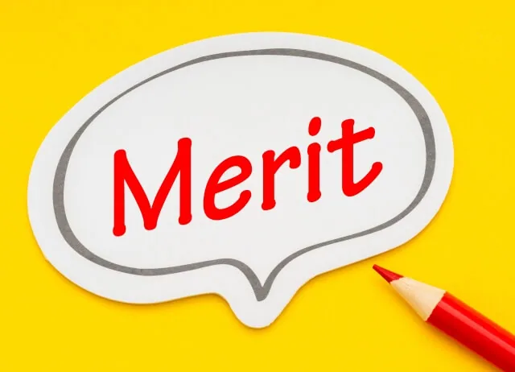

「施設の集客力を高めたい」「リラクゼーション設備を導入して他店と差別化したい」など、アウトドアサウナの導入を検討していませんか？商用（宿泊施設、キャンプ、グランピング、保養所など）向けのサウナ導入は、顧客満足度向上やブランド価値の強化に大きく貢献します。しかし、適切な設置場所の選定や運用コストの管理、メンテナンスの負担を考慮しなければなりません。
こちらでは、アウトドアサウナを導入するメリットやスムーズな設置方法、効率的な運用と維持管理のポイントを詳しく解説します。国産ひのきを使用した高品質なサウナを提供するRink SAUNAをお届けする情報です。
導入の流れを理解し、効果的な運用方法を知ることで、コストパフォーマンスの高いサウナ設備を実現できます。設置から使用後のメンテナンスまで、一貫した知識を身につけ、ビジネスに新たな価値を加えましょう。
アウトドアサウナ導入のメリット

近頃はサウナが注目されているによって、新たな集客の柱として期待されています。特に、自然の中で楽しむアウトドアサウナは人気が高く、施設への導入の検討は不可欠です。今回は、法人のお客様向けに、アウトドアサウナ導入によるメリットを解説します。
| メリット | 説明 |
|---|---|
| 集客効果の向上 |
|
| 差別化戦略 |
|
| ブランディング力向上 |
|
| コストパフォーマンス |
|
アウトドアサウナは宿泊施設やリゾート、温浴施設にとって、大きな集客効果を生み出す、強力なツールとなり得ます。「サウナイキタイ」といったナビサイトも注目されており、サウナ愛好家の間では話題の施設を巡ることがトレンドです。個性的なアウトドアサウナを設置することで、新たな顧客層を獲得できるだけでなく、リピーターの獲得にもつながります。
また、他社との差別化戦略としても、アウトドアサウナは有効です。近年は宿泊施設や温浴施設間の競争が激化しており、顧客獲得のためには独自のサービス提供が不可欠です。「このサウナを目的に来たい」と思わせるアイキャッチ的存在で他社との差別化を図れます。
バレルサウナ導入後、予約がひと月先まで埋まるなど、宿泊の稼働率が大幅に高まった民泊・貸別荘事業者も多くおられます。
特に自然豊かなロケーションに設置することで、自然と一体化した特別なサウナ体験を提供でき、顧客満足度向上につながります。
さらに、アウトドアサウナは、施設のブランディング力向上が可能です。「自然との調和」「健康増進」「特別な体験」といったサウナを通じて、“心と体を整える場所”というブランドイメージを確立できる。一貫したコンセプトと高品質な体験により、リピーターやファン層の獲得が可能です。
通常の常設サウナを導入する場合、数千万円の初期投資が必要になりますが、バレルサウナなら屋外に数百万円で設置ができる点も魅力！
一年で初期投資費用を回収し、追加施設にもバレルサウナを導入される事業者も！
導入にあたっては、設置場所の選定・サウナの種類・関連設備・法的要件・運用方法など、さまざまな要素を検討する必要があります。適切な手続きと綿密な計画を立てることで、顧客にとって魅力的なアウトドアサウナを実現できるでしょう。
アウトドアサウナの設置に必要な準備と手続き
アウトドアサウナを導入するには、適切な設置場所の選定と必要な手続きが不可欠です。サウナを設置するにあたっては、まずは十分なスペースを確保と水平でしっかりした基礎（コンクリート基礎）で安全に設置・運用できるかどうかの確認が必要です。
設置場所の選定後、消防法（各自治体の火災予防条例等）や公衆浴場法・旅館業法などの関連法規を確認しましょう。
また、新築や10平米以上の増設の場合、建築確認申請が必要となるため、事前に管轄の建築指導課などに相談しておきましょう。特に防火地域や準防火地域に該当する場合は、建築確認が必要な他、原則的に可燃物の設置はできませんので、注意が必要です。
また、サウナの設置には熱源によって電気やガス、薪材などの確保も忘れずに。特に電気ヒーターについては、出力によって必要なアンペア数を確認し、不足している場合は、電力会社へのプラン変更と電気工事が必要になります。以下に、設置準備と手続きの大まかな流れをまとめました。
| 準備・手続き | 内容 | 担当 |
|---|---|---|
| 設置場所選定 | 土地の広さ、地面の安定性、搬入経路など周辺環境の確認 | 施設責任者 |
| 法令確認 | 建築基準法、消防法（火災予防条例）、保健所（公衆浴場・旅館業法）など関連法規の確認 | 施設責任者 |
| 熱源による追加工事 | 電気やガス、水道、排水設備の確認と施工手配 | 電気工事士、ガス会社などの業者 |
| 申請手続き | 役所（建設指導課）、消防（予防課）や保健所など必要に応じて届出・許可申請書類の提出（商用のみ） | 建築士、工務店、行政書士など業者 |
| 設置工事 |
|
各種業者 |
| 試運転・検査 | 設置完了後の動作確認、安全検査 | 施設責任者 |
| 消防・保健所検査 | 消防、保健所の立会い検査後に、営業許可がおります。 | 施設責任者 |
これらの準備と手続きを適切に行うことで、安全で快適なアウトドアサウナの運用が可能になります。
アウトドア施設のサウナ設置…
集客の目玉として訴求しやすい具体的な設置場所
アウトドア施設へのサウナ導入では、設置場所がそのまま集客の目玉となります。しかし、ただ置けば良いわけではなく、安全な運用と手続きを両立させることが成功の鍵です。お客様に喜ばれつつ、法令に適合した具体的な場所をご提案します。
絶景や水辺を見渡せる開放的なスペース
サウナ室内の窓から見える景色は、利用者にとって最大の満足感につながります。水風呂や外気浴スペースを隣接させることで、スムーズな動線が確保でき、SNS映えするスポットとしても注目されます。
プライベート感を重視した各客室の専用デッキ
自分たちだけの空間を求めるニーズは非常に高いです。各テントやコテージの横に設置することで、他人の目を気にせずリラックスできるため、宿泊単価アップへの大きな貢献も期待できます。
施設のシンボルとなる共有エリア
キャンプ場の広場などに配置し、施設の顔として訴求します。夜間のライトアップを行えば、宿泊者以外への強力なアピールにもなり、夜間の集客力アップ施策にもなります。
設置場所を選ぶ際は、建物の防火制限や消防法、さらには200Vの電気供給が可能かどうかという手続き面の確認が不可欠です。Rink SAUNAは、国内製造・自社一貫体制だからこそ、現場に合わせた柔軟な提案が可能です。法令遵守に基づいた最適な配置など、プロの視点からのアドバイスが欲しい方もお気軽にご相談ください。
効率的な運用方法とメンテナンスのポイント
アウトドアサウナを快適に運用し、その寿命を長く保つためには、適切な運用方法と定期的なメンテナンスが欠かせません。
運用中の維持管理とメンテナンスの重要性
アウトドアサウナを快適に、そして安全に長く運用するためには、定期的な維持管理と適切なメンテナンスが必要です。導入後もサウナを良好な状態で維持することで、施設の価値向上にもつながります。運用開始後も、適切な手続きと計画的なメンテナンスを実施しましょう。
具体的には、以下の項目に焦点を当てたメンテナンス計画を立て、実行していくことが有効です。
| 維持管理項目 | 内容 | 頻度 |
|---|---|---|
| 衛生管理 | サウナ室内の清掃、消毒、換気、タオル交換 | 毎日 |
| 薪ストーブのメンテナンス | 灰の除去、煙突・ガラス扉の掃除、金属部分のサビチェック ストーンの清掃 |
年1～2回 |
| 電気ストーブのメンテナンス | 内部のほこり・異物除去 温度センサーの動作確認 配線、漏電ブレーカーの確認 ストーンの清掃 |
年2回 |
| 木材の劣化チェック | ひび割れ、隙間、腐食、カビの発生確認 | 定期的に |
| バレルサウナ（構造）のメンテナンス | バンドの緩み調整、部材の隙間などの確認 （屋根材）雨漏りの確認 |
年4回 |
| 再塗装 | 上塗り塗装（防腐・防虫・防カビ効果を維持） | 3〜4年に1回 |
適切なメンテナンスを実施することで、故障や事故のリスクを軽減し、サウナの長寿命化を実現できます。また、利用者の安全確保だけでなく、快適なサウナ体験の提供にもつながります。
運用開始後のメンテナンス計画は専門業者との連携も視野に入れ、作成・実施していくことが大切です。使用後に定期的な掃除や換気、ストーブの適切な運用なども、アウトドアサウナの使用寿命を延ばすうえで有効なポイントです。これらの運用ノウハウを蓄積することで、より効率的な施設運営が可能になります。
長く快適に利用するための運用ノウハウ
バレルサウナを長く快適にご利用いただくためには、日々の運用ノウハウの蓄積が大切です。特に国産ひのき材の特性を理解したうえで、適切なメンテナンスを行うことで、サウナ本来のよさを安定的かつ長く楽しめます。
温度・湿度や水回りの管理
運用開始後、サウナストーブの適切な焚き方、温度・湿度の管理方法などをマニュアル化し、スタッフ間で共有しましょう。シャワーや水風呂の掃除も忘れず、一つのととのい空間を長く維持しましょう。
これにより、利用者へ常に快適なサウナ体験を提供することが可能です。
地域コラボ・イベント企画
また、地域おこし協力隊など、地域に根ざした活動をしている団体とのイベント企画などの連携も有効です。地域固有の資源を活用したサウナ運営（たとえば、地元産の新鮮食材で作られたサ飯提供や地域発のアロマオイルの活用など）は、地域活性化にも貢献し、サウナ施設の付加価値向上につながります。
接客・サービスの工夫
初心者向けのご案内やサウナマナーの告知、サウナ→水風呂→外気浴までの動線をスムーズに調整、や夜間照明演出、BGMな“ととのい”体験を向上させる工夫を取り入れてみましょう。
さらに、定期的なメンテナンスに加え、利用者からのフィードバックを積極的に収集することも大切です。利用者の声をサービス改善に活かすことで、顧客満足度を高め、リピーター獲得につなげられます。
これらの運用ノウハウを蓄積し、改善を続けることで、地域に愛されるサウナ施設を目指しましょう。
アウトドアサウナ導入で失敗しないためのポイント
アウトドアサウナの導入は、施設の集客力向上や差別化に大変有効ですが、いくつかの注意点を押さえておかないと、後悔につながることもあります。特に、サウナ設置には計画的な準備と適切な手続きが重要です。ここでは、導入で失敗しないための主要なポイントをまとめました。
予算は明確ですか？
サウナ本体の費用だけでなく、基礎工事、電気・ガス・水道工事、運搬・設置費用、さらにはランニングコストも考慮に入れましょう。想定外の出費を防ぐため、事前に詳細な見積もりを取ることが大切です。
設置場所は適切ですか？
消防法や建築基準法などの法規制をクリアできるか、十分なスペースがあるか、搬入経路は確保できるかなど、専門家と相談しながら慎重に選びましょう。
運用体制は整っていますか？
日常の清掃やメンテナンス、利用者への案内、緊急時の対応など、スムーズな運用に必要な体制を事前に構築しておくことが重要です。定期的な点検や清掃を怠ると、サウナの寿命を縮めたり、利用者の安全を損なったりする恐れがあります。
アフターサポートは充実していますか？
導入後のトラブルや疑問点に対応してくれるメーカーや施工業者を選びましょう。長期的な視点で安心して運用するためには、信頼できるパートナーを見つけることが大切です。
これらのポイントを事前に確認し、計画的に進めることで、アウトドアサウナ導入の成功に近づけるでしょう。
アウトドアサウナ導入のご相談はRink SAUNAまで
Rink SAUNAのバレルサウナは、国産ひのきの豊かな香りと優れた防腐・防虫性・消臭性を備えた高品質な設計で、極上のリラクゼーションを提供します。耐久性の高い特別仕様により、長期間にわたり快適に利用できるため、施設の魅力向上に加え顧客満足度の向上にも貢献します。
導入にあたっては、施設の条件やニーズに応じた熱源（電気ヒーター・薪ストーブ・ガスストーブ）を選択でき、全国対応の設置サービスによりスムーズな導入が可能です。法人向けに迅速な納品と確実な納期を実現しており、これまで納期遅延のない信頼性の高いサービスを提供しています。
アウトドアサウナを導入することで、競合との差別化を図り、付加価値の高い施設運営を実現できます。導入を検討中の方は、ぜひお気軽にお問い合わせください。専門スタッフが最適なプランをご提案し、設置から運用までサポートいたします。